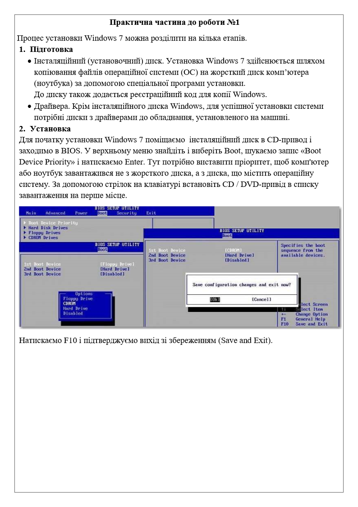
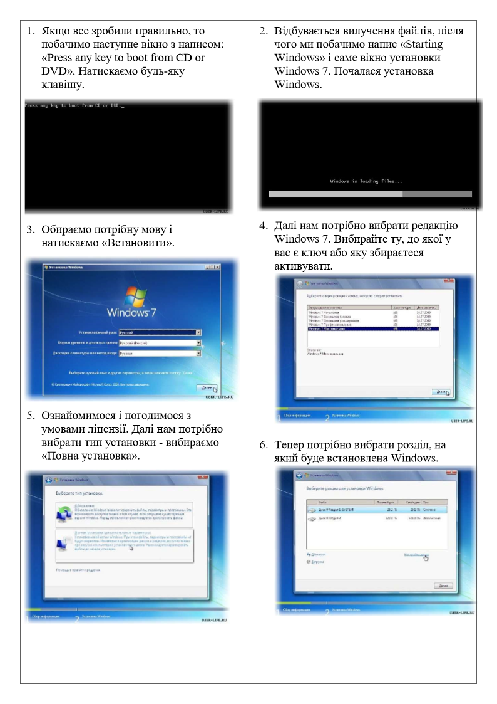
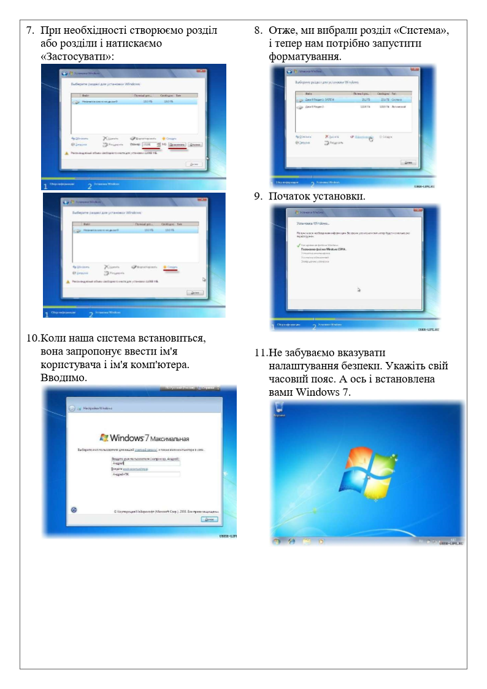
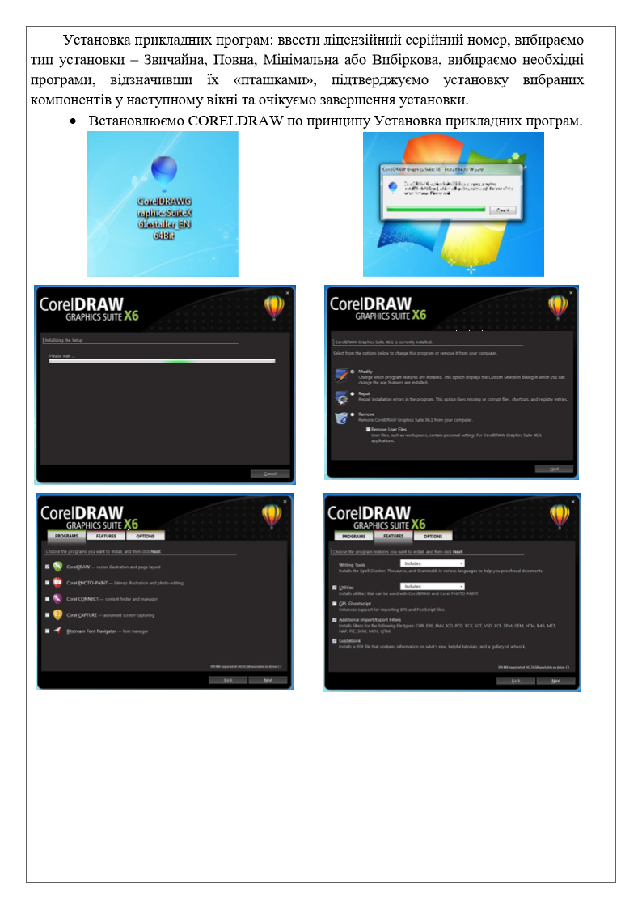
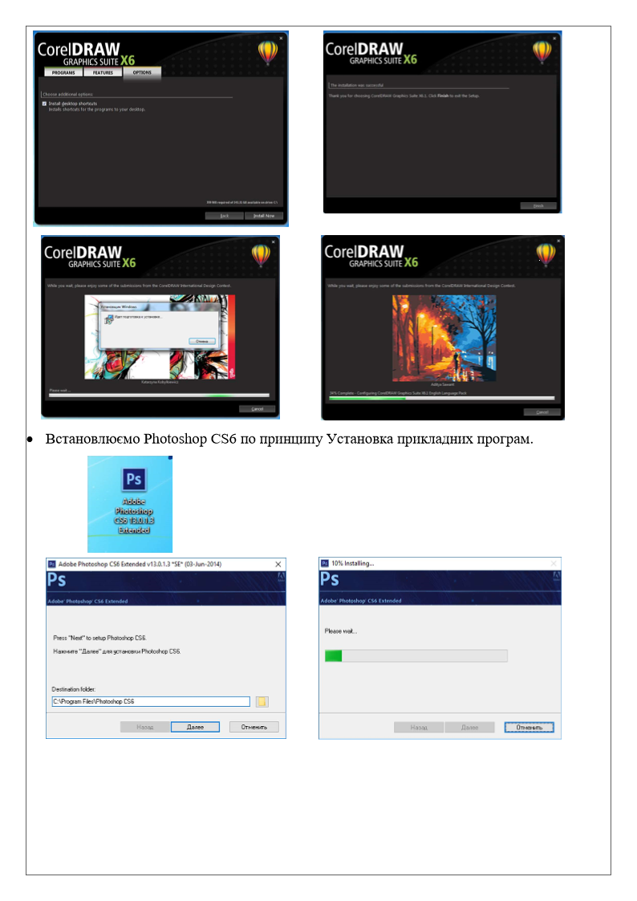

Практична робота №1
Тема: Інсталяція та настройка ОС Windows 7, прикладних та системних програм ОС Windows 7
Мета роботи: володіти навиками інсталяції та настройки ОС Windows 7, прикладних та системних програм.
Хід роботи:
- Отримати інсталяційний диск.
- Установити Windows 7.
- Установити офісні пакети.
- Установити драйвери.
- Установити необхідне програмне забезпечення:
- антивіруси;
- архіватори;
- офісні програми.
- Установити програму CorelDRAW.
- Установити програму Adobe Photoshop CS6
- Описати свої дії.




